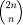

- Операционная система: Windows
- Для обычного ввода n просто введите n
- Для степенного ввода введите основание A, потом показатель K
- Вводим N либо в обычной форме, либо в степенной
- Если n меньше 10^5, то программа высчитывает средний биномиальный коэффициент  (подсчет может длится до 10 секунд, поэтому не пугайтесь, если программа на время зависнет, она высчитывает )
- Программа находит q(n) - наименьший нечетный простой делитель для этого биномиального коэффициента
- Если n меньше 10^5, то мы проверяем, делится ли подсчитанный коэффициент на наш найденный q(n) без остатка
- Чтобы окончить работу, нажмите Enter
Машинный эксперимент по расчету наименьшего простого нечетного делителя для биномиального коэффициента
Программа предназначена для визуализации протоколов, основанных на криптосистемах с открытой частью ключа. В программе представлены стандартные протоколы, обсужденные на лекциях.
Системные требования
Инструкции
Чтобы запустить программу, нужно извлечь все из папки, а потом запустить Machine_Experiment.exe
Для ввода n сначала нужно вписать 1 или 2 для соответственно обычного ввода n или степенного
Дальше программа все сделает